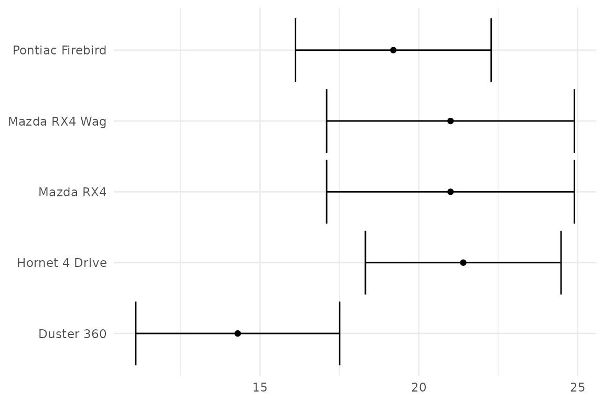
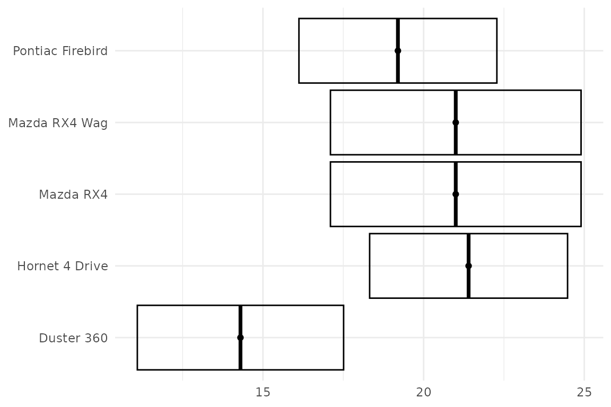
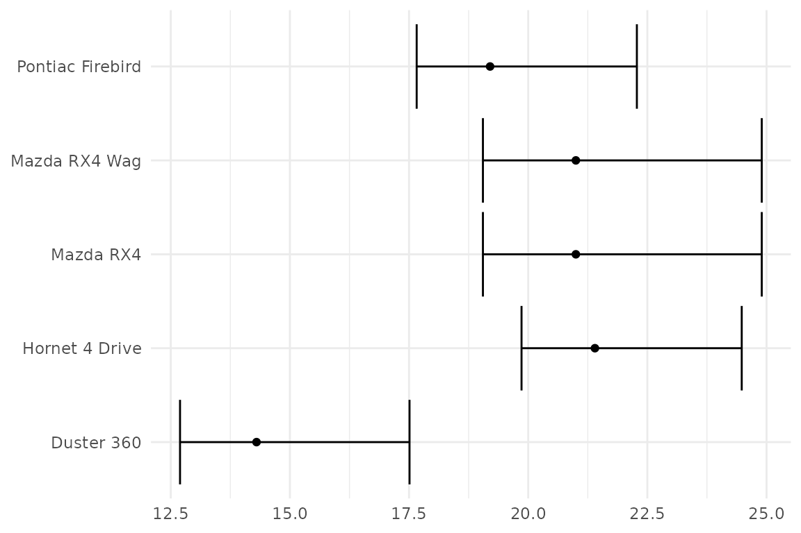
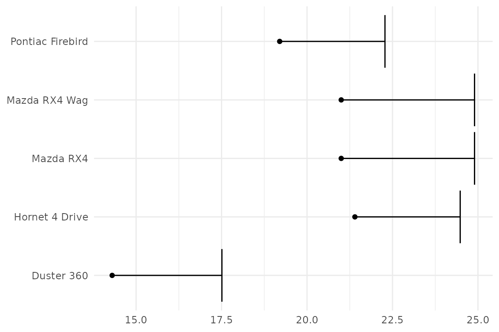
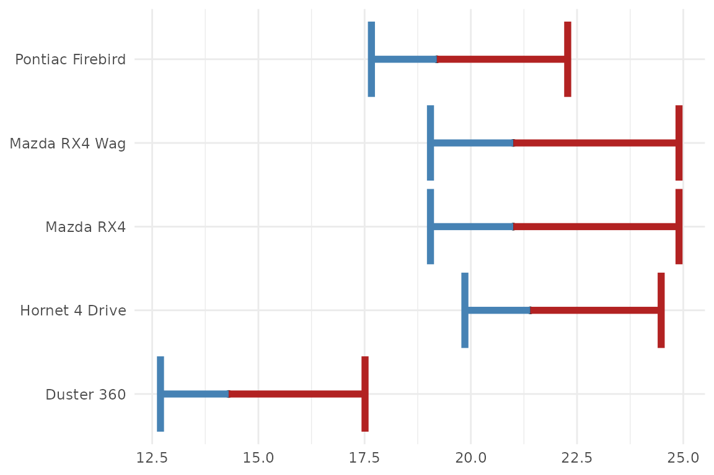
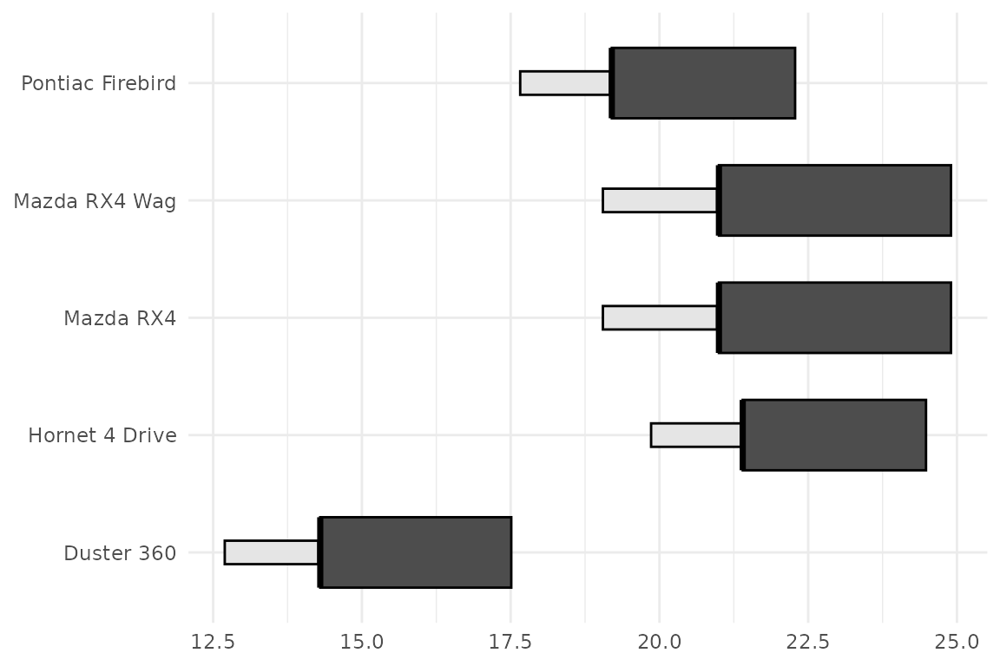

Why ggerror?
Base ggplot2 gives you several different error geoms,
but using them means deciding on orientation, which axis the error
should follow, and how to wire the lower and upper bounds correctly. It
creates a overhead and a cluncky DX. ggerror collapses that
into one layer and one error-focused API.
Everything in this vignette uses mtcars, so you can copy
the examples directly.
set_theme(
theme_minimal() + theme(
plot.title = element_text(hjust = 0, family = "consolas", size = 12),
axis.title = element_blank()
))
p <- ggplot(mt, aes(mpg, rn)) +
geom_point()Symmetric errors
p + geom_error(aes(error = drat))
geom_error() infers orientation from the data. When one
axis is discrete and the other is numeric, the error expands along the
numeric axis. The default geom is errorbbar, which triggers
under the hood geom_errorbar().
Choosing the error geom
You can pick the base range geom either through
error_geom or via one of the pinned wrapper functions.
p + geom_error(aes(error = drat), error_geom = "crossbar")
p + geom_error_crossbar(aes(error = drat))
Supported values for error_geom are
"errorbar", "linerange",
"crossbar", and "pointrange".
💡 Tip: Make use of geom_error() for a
functional programming approach by using the error_geom
argument with purrr::map().
Asymmetric errors
Use error_neg and error_pos when the
negative and positive extents differ.
p + geom_error(aes(
error_neg = drat / 2,
error_pos = drat)
)
error_neg extends in the negative direction and
error_pos extends in the positive direction, regardless of
whether the error is horizontal or vertical. Both must be supplied
together. Not having to deal with orientation and
min/max reduces overhead and ensures you stay
focused on displaying the data, rather than the mechanics of the
plot.
One-sided bars
Set the unused side to NA for a genuine one-sided error
bar — ggerror auto-suppresses the cap and stem on that
side.
p +
geom_error(aes(
error_neg = NA,
error_pos = drat
))
Passing 0 instead of NA still works but is
soft-deprecated since v1.0.0 — you’ll get a migration warning, and you’d
also need width_neg = 0 to hide the shared cap.
NA is the cleaner idiom.
More customization: per-side styling
For finer control, the negative and positive sides can be styled
separately with fixed _neg and _pos parameters
for colour, fill, linewidth,
linetype, alpha, and width.
p +
geom_error(aes(
error_neg = drat / 2,
error_pos = drat),
colour_neg = "steelblue",
colour_pos = "firebrick",
linewidth = 2 # you can still control both sides of the error bar
)
p +
geom_error(aes(
error_neg = drat / 2,
error_pos = drat),
error_geom = "crossbar",
fill_neg = "grey90",
fill_pos = "grey30",
width_neg = 0.2,
width_pos = 0.6
)
Extending ggerror
If you know of, or need, a new error geom, please open an issue on
the GitHub
repository. My first motiviation was to simplify the heck out of the
error geoms, reducing the aesthetics to a single error
aesthetic. The rest (asymmetric, one-sided, etc) are just niceties that
I added along the way.